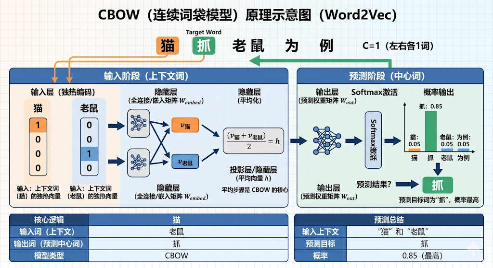
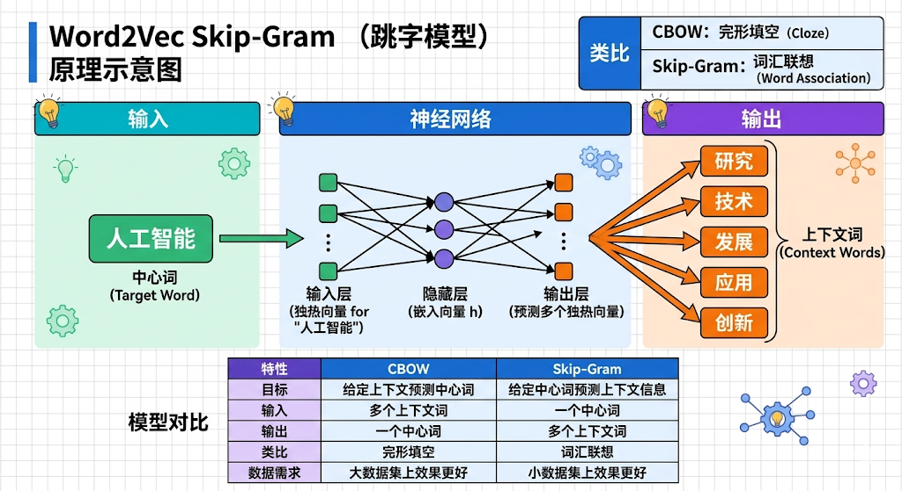
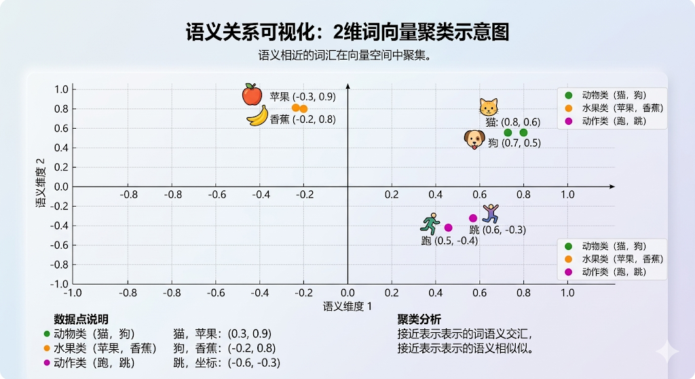

"一个词的意义，要看它与哪些词经常一起出现。"
-- J. R. Firth
这一篇我们继续讲解Word2vec技术，将围绕Word2vec的两类主要模型来讲解，一类是通过上下文来预测中心词，一类是通过中心词来预测上下文。
要理解Word2vec的训练技术，首先要理解Word2vec中的窗口的概念，这也是"上下文"范围大小的具体量化方法。
对于一个给定的中心词，会考虑词的多大范围内算是它的上下文，因为word2vec的分布式假设就和"上下文"这个概念息息相关。
"窗口"的大小可以类比于人眼的眼眶大小，就像是一个"焦点范围"，是模型可以来学习词语共现关系的范围大小。
CBOW模型，英文名全称为Continuous Bag-of-Words模型，它的核心思想非常直观，通过上下文来预测中间词，说白了就是中学时代的"完形填空"，利用"空白词"周边的上下文来预测空白词是什么。

CBOW的优化目标是最大化在给定上下文时，中心词出现的概率：
$$ max∑logP(w_t ∣w_t−n ,…,w_t+n ) $$其中 $w_t$ 是中心词（需要预测的目标词），$w_{t-n}, \dots, w_{t+n}$ 是中心词前后的若干个词，构成了上下文窗口。在实际计算时，这些上下文词通常会先通过求和或取平均，合成为一个上下文向量，再用这个上下文向量去预测中心词。
CBOW的输入层负责接收中心词周围上下文词的表示。假设词汇表大小为 $V$，窗口大小为 $C$，中心词左右各取2个词，则 $C=4$。
每个上下文词都使用一个 One-Hot编码 的 V 维向量表示。一次会有 $C$ 行个这样的One-Hot向量同时输入。
如果词汇表是 ["猫", "吃", "鱼", "喜欢", "跑", "跳"]，则 $V$=6。对于中心词"鱼"和上下文窗口["猫", "吃", "喜欢", "跑"]（左右各取2个词），那么"猫"、"吃"、"喜欢"、"跑"各自的One-Hot向量就是输入，$C$=4。
隐藏层是CBOW模型的关键，其核心作用是将多个上下文词的One-Hot信息压缩（聚合）成一个低维的、有意义的向量表示。
$$ \text{词向量} = W_{\text{embed}} \cdot \text{One-Hot向量} $$隐藏层首先将每个上下文词的One-Hot向量与一个共享的输入权重矩阵 $W$（维度为 $V \times N$）相乘。这个操作等效于直接从矩阵 $W$ 中取出对应词所在行的向量，这个向量就是该词的初始分布式表示（词向量）。
然后，模型将得到的 $C$ 个 N 维向量进行求和或取平均，得到一个单一的 N 维向量，作为隐藏层的输出。这一步也体现了"词袋"（Bag-of-Words）的思想，即暂时忽略了上下文中词的顺序信息。
隐藏层输出的这个 N 维向量，可以看作是当前上下文信息的一个概括性表示。训练完成后，这个输入权重矩阵 $W$ 就是我们最终要得到的词向量矩阵，即嵌入矩阵，也称之为embedding层。
输出层的功能就是接收隐藏层输出的上下文向量，并计算词汇表中每个词作为中心词的概率。
隐藏层的输出向量会与另一个输出权重矩阵 $W'$（维度为 $N \times V$）相乘，得到一个 $V$ 维的分数向量。这个向量中的每个分数对应词汇表中的一个词。
这一步的操作计算量巨大，如果使用传统Softmax函数计算得分，在词表超大的情况下，则计算效率极低，因为它往往需要对整个词表中的所有词都计算一遍分数并归一化。通常采用上文提到的层次Softmax（Hierarchical Softmax）和负采样技术来提升计算效率。
如果把CBOW类比于"完形填空"，那么Skip-Gram模型就是"词汇联想"，即 $CBOW$ 是用上下文预测中心词，而Skip-Gram是用中心词预测上下文信息。
如给定一个中心词"人工智能"，Skip-Gram可以预测其周围可能出现的上下文词："研究"、"技术"、"发展"等。

最大化给定中心词时上下文的条件概率
$$ \max \sum \log P(w_{t-n},\ldots,w_{t+n} \mid w_{t}) $$其中 $w_t$ 是中心词， $w_{t-n}, \dots, w_{t+n}$ 是n个词组成的上下文窗口，也是要预测的词。
输入层负责接收一个中心词。假设词汇表大小为 V，那么每个词都可以表示为一个长度为 V 的 One-Hot编码向量。
这个向量中，只有对应词在词汇表中索引位置的值为1，其余全部为0。
如果词汇表是 ["猫", "喜欢", "鱼", "狗"]，V=4，那么"喜欢"的One-Hot向量可能是 [0, 1, 0, 0]。
隐藏层是Skip-gram模型的关键层，因为它的权重矩阵就是我们最终要学习的词向量查询表。
$$ \text{词向量} = W_{\text{embed}} \cdot \text{One-Hot向量} $$其权重矩阵 W 的维度为 $[V \times N]$，其中 N 是词向量的目标维度（通常为100-300维）。当输入一个中心词的One-Hot向量 $x$ 时，进行矩阵运算 $h = Wx$。
由于 $x$ 是 One-Hot 向量，这个矩阵乘法运算实际上等效于直接从矩阵 W 中取出该词索引对应行的向量。这个操作效率极高，相当于一次"查表"。
Skip-Gram的隐藏层也没有非线性激活函数，仅仅是一个线性投影层。其输出 h 就是一个 N 维的稠密实数向量，即该中心词的词向量（Word Embedding）。
输出层的作用是将隐藏层生成的词向量，用来预测词汇表中每个词作为中心词的上下文词的概率。
隐藏层的输出向量 $h$ 与另一个权重矩阵 W'（维度为 $[N \times V]$）相乘，得到一个 V 维的分数向量，这个分数向量会通过一个 Softmax函数 被转换为一个概率分布，使得所有词的概率之和为1。
这一步的操作计算量巨大，如果使用传统Softmax函数计算得分，在词表超大的情况下，则计算效率极低，通常采用上文提到的层Softmax和负采样技术来提升计算效率。
假设有一个微型词典，包含这些词语：["猫", "狗", "苹果", "香蕉", "跑", "跳"]，一共共6个词，则维度=6，词表的大小为6。
每个词的 one-hot 编码如下：
| 词语 | One-Hot 编码 |
|---|---|
| 猫 | [1, 0, 0, 0, 0, 0] |
| 狗 | [0, 1, 0, 0, 0, 0] |
| 苹果 | [0, 0, 1, 0, 0, 0] |
| 香蕉 | [0, 0, 0, 1, 0, 0] |
| 跑 | [0, 0, 0, 0, 1, 0] |
| 跳 | [0, 0, 0, 0, 0, 1] |
这样的编码方式存在两个问题，其一是每个词是独立的，无法表达语义关系，如"猫"和"狗"都是动物；其二是计算复杂度高，6维虽小，但实际中词典通常有数万到百万维。
假设目标是将每个词映射到 2维稠密向量，实际中常用100-300维，此处简化以便可视化。理想情况下，语义相近的词在二维空间中距离较近，
例如：动物类（"猫""狗"）聚集在一起；水果类（"苹果""香蕉"）形成另一簇；动作类（"跑""跳"）分布在另一区域。
定义一个权重矩阵 $W \in \mathbb{R}^{6 \times 2}$ ，将6维 one-hot 向量投影到2维。初始值随机生成，例如：
| 词语 | One-Hot编码 | 权重矩阵 W 的行向量 | 投影后的2维向量 |
|---|---|---|---|
| 猫 | [1,0,0,0,0,0] | [0.1, -0.2] | (0.1, -0.2) |
| 狗 | [0,1,0,0,0,0] | [0.3, 0.5] | (0.3, 0.5) |
| 苹果 | [0,0,1,0,0,0] | [-0.4, 0.6] | (-0.4, 0.6) |
| 香蕉 | [0,0,0,1,0,0] | [0.7, -0.1] | (0.7, -0.1) |
| 跑 | [0,0,0,0,1,0] | [-0..5, 0.3] | (-0.5, 0.3) |
| 跳 | [0,0,0,0,0,1] | [0.2, -0.8] | (0.2, -0.8) |
通过矩阵乘法将 one-hot 向量转换为稠密向量：
$$ \text{稠密向量} = \text{one-hot向量} \times W $$例如，"猫"的 one-hot 是 [1,0,0,0,0,0]，其稠密向量为：
$$ [1,0,0,0,0,0] \times W = [0.1, -0.2] $$同理，"狗"的向量为 [0.3, 0.5]，初始时它们的位置可能并不接近。
以句子"猫 跑 苹果"为例，模型通过上下文学习调整向量
输入中心词："跑"（one-hot：[0,0,0,0,1,0]，初始向量：[-0.5, 0.3]）
目标上下文词："猫"和"苹果"
通过训练（如负采样），模型逐步调整 W 的参数，使得"跑"的向量与"猫""苹果"的向量在投影空间中的相关性增强；同时降低"跑"与无关词（如"香蕉""跳"）的相关性。
你可以把这个过程理解成：模型会慢慢学会，哪些词更容易在彼此附近一起出现。
经过多轮训练后，权重矩阵 W 被优化，语义相近的词向量趋于接近。假设最终向量如下（数值仅为示意）：
| 类别 | 词语 | 训练后的2维向量 |
|---|---|---|
| 动物类 | 猫 | [0.8, 0.6] |
| 狗 | 🐶 (0.7, 0.5) | |
| 水果类 | 苹果 | 🍎 (-0.3, 0.9) |
| 香蕉 | 🍌 (-0.2, 0.8) | |
| 动作类 | 跑 | 🏃 (0.5, -0.4) |
| 跳 | 🦘 (0.6, -0.3) |
将2维向量绘制在坐标系中，语义相近的词会聚集：
动物类：
猫 (0.8, 0.6) 和狗 (0.7, 0.5) 距离较近。
水果类：
苹果 (-0.3, 0.9) 和香蕉 (-0.2, 0.8) 形成另一簇。
动作类：
跑 (0.5, -0.4) 和跳 (0.6, -0.3) 位于另一区域。

这样一来，词语就不再是彼此孤立的编号，而是变成了在空间中有相对位置关系的向量。虽然很多人会把这个过程通俗地叫作"降维"，但更准确地说，它其实是在训练中学习出低维的词嵌入表示。
向量维度从6维变成2维，实际中通常是从超高维的离散表示，学习成几百维左右的稠密向量。通过上下文训练，向量空间中的几何关系（如距离、方向）能够在一定程度上反映语义关联。
比如在经典例子里，人们常会看到类似"国王 - 男人 + 女人 ≈ 女王"这样的现象。它并不是说模型真的会做数学题，而是说某些语义关系，真的可能在向量空间里表现为相对稳定的方向关系。
当然，Word2vec也有它的局限。比如它会忽略上下文词的顺序信息，所以像"狗咬人"和"人咬狗"这种词差不多、但顺序完全不同的句子，它未必能很好地区分。
以上就是word2vec的核心知识，word2vec 的诞生标志着 NLP 从符号逻辑与统计方法转向神经网络与分布式表示的范式革命。其背后的故事反映了科研中"简化胜于复杂"的智慧，以及偶然发现对技术发展的推动力。Mikolov 后来离开 Google 加入 Facebook，继续推动语言模型研究（如 FastText），而 word2vec 的遗产至今仍在 BERT、GPT 等模型中延续。
上下文窗口（Context Window）：指模型在学习一个词时，会把它前后一定范围内的词当作"上下文"。窗口越大，看到的语境越广；窗口越小，更关注局部搭配。它决定了 Word2vec 到底是在学习"短距离共现"，还是"更宽范围的语义关系"。
CBOW（Continuous Bag-of-Words）：一种"根据周围词猜中间词"的模型。你可以把它理解成"完形填空"--把中心词遮住，再根据前后文去猜它是什么。它训练速度通常更快，对高频词学习效果往往也不错。
Skip-Gram：一种"根据中心词猜周围词"的模型。和 CBOW 相反，它是给你一个词，再让你去预测它附近可能出现哪些词。它通常对低频词更友好，也更能学到细致的词语共现关系。
词嵌入（Word Embedding）：就是把原本高维、稀疏、彼此孤立的 one-hot 词表示，变成低维、稠密、带有语义关系的向量表示。这样一来，"猫"和"狗"这类意思接近的词，在向量空间里也会更靠近，而不再只是两个毫无关系的编号。
负采样（Negative Sampling）：一种提升 Word2vec 训练效率的技巧。原本 Softmax 需要对整个词表里的所有词都算一遍概率，代价很大；负采样则只让模型关心"正确词"和少量"错误词"，从而大幅减少计算量。你可以把它理解成：不需要每次都考全班，只抽几个典型错项来练。